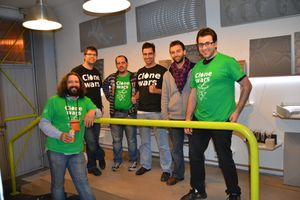
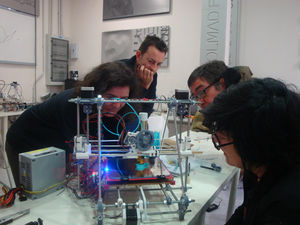
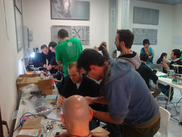
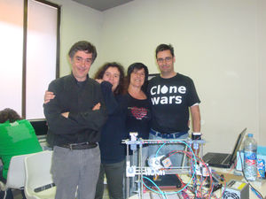
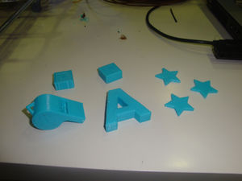
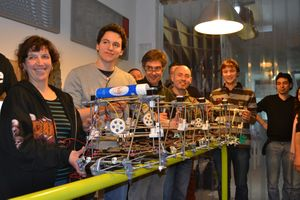

Contenido
[ocultar]Ficha del curso

Instructores: Los hombres de Prusalson... (Click para ampliar)
- Título: Curso de impresión 3D. Monta tu propia impresora 3D
- Duración: 20 horas
- Organización: Controlmad
- Fecha: 22, 23 y 24 de Marzo 2013
- Horarios:
- Viernes: 16:30-20:30
- Sábado: 10:00-14:00 y 15:30-20:00
- Domingo: 10:00-14:00 y 15:30-19:00
- Lugar: Controlmad
- Asistentes:: 14 (divididos en 5 grupos)
- Instructores:
- Juan Manuel Amuedo (Cole)
- Julio Galarón
- Fernando Salceda (Klonando)
- Pablo Clemente (Paclema)
- Juan Gonzalez (Obijuan)
- Descripción:
- Taller de montaje de impresoras 3D Opensource, modelo Prusa i2. Se construyen en total 5 impresoras, una por grupo. En cada grupo hay un instructor que guía el montaje y ayuda en las pruebas. Aprender a construir tu impresora 3D es muy interesante, ya que podrás replicarla, además de repararla y actualizarla. Una vez construida se enseña su manejo básico, aunque debido a lo denso que es el curso, no queda mucho tiempo para poder poder recrearse en las impresiones.
- Hay dos modalidades de inscripción:
- Modalidad A: Aprendes a montar y te llevas tu impresora 3D debajo del brazo (895€, IVA incluido)
- Modalidad B: Aprendes a montar y manejar la impresora (195€, IVA incluido). Podrás montar una cuando tú prefieras después del curso (necesitarás adquirir un KIT como el que utilizaremos en el curso. Se puede comprar en Internet.
- Kit de impresora: Pack Jedi Prusa, de Reclone3D
Material del Curso
En el montaje de las impresoras durante el curso vamos a seguir el temario de estos video-tutoriales. De esta manera los asistentes los podrán utilizar para replicar sus impresoras:
| |
Guia de montaje de la Prusa 2 Aprende a construir tu impresora 3D opensource |
 |
Evolucionando la Prusa 2 Continuación del Tutorial de la Prusa 2. ¡Vamos a mejorarla! |
Fotos
| Álbum de fotos Obijuan | Álbum de fotos Pablo Clemente | Album de fotos de Cole |
|---|
|  La primera impresión... (Click para ampliar) |
 En el fragor de la batalla... (Click para ampliar)) |
|  Uno de los grupos, junto a la nueva impresora (Click para ampliar) |
 Algunas de las piezas impresas durante las pruebas (Click para ampliar) |
|  Las impresoras del taller... (Click para ampliar) |
VIDEO
|
|


El taller día a día
Día 1: Electrónica
El primer día (la tarde del viernes), se finalizaron los siguientes puntos:
- Trucaje de la fuente de alimentación. Prueba
- Aplanado de los ejes de 3 motores
- Soldados los conectores de los motores (de los 5)
- Soldados los conectores de los finales de carrera
- Descarga del firmware en la ramps 1.4
- Prueba de los motores y los finales de carrera
| CtrlMad-Sprinter-1.3.22T-Nov-2012.zip | Firmware Spriner 1.3.22T. Versión final usada para imprimir, configurada para las impresoras del taller. Descargar con Arduino 1.0 ó superior |
| Ctrlmad-Sprinter-Superestable-Arduino-1.zip | Firmaware: Sprinter Super-estable, configurado para la impresora del taller. Descargar con Arduino 1 ó superior. Usado para las pruebas iniciales |
| Sprinter-Superestable-Arduino-1.zip | Firmware Sprinter (Super-estable). Versión inicial (sin modificar para el taller). Compilar con Arduino 1 ó superior. |
Día 2: Chásis completo y cableado
- Montaje del eje X. Pruebas
- Montaje del chásis básico
- Taladrado de la base del eje y
- Montaje del eje Y. Pruebas
- Montaje del eje Z
- Montaje de la base caliente. Pruebas
Día 3: Extrusor, Software e impresión
- Montaje del cuerpo del extrusor
- Montaje del hot-end. Pruebas
- Ensamblado del extrusor completo
- Colocación del extrusor en la impresora
- Pruebas de extrusión:
- Manual
- Con el motor
- Primera impresión
- Impresiones varias para comprobar la máquina
- Software: tipos y manejo
- Instalación del software
Enlaces
- Controlmad: Organizadores del taller
- Instrucciones para instalar el software
- Thingiverse: Repositorio de objetos 3D
- Piezas Prusa i2. Todas las pieza de la prusa i2, para descargar e imprimirte otra impresora
- Objeto para imprimir: Estrellita
- Estrellita en thingiverse
- Silbato
Agradecimientos
- A Controlmad por haber contado con nosotros por dar el taller. ¡Muchas gracias!
Noticias
- 09/Abril/2013: ¡Primera versión de la página lista!
- 08/Abril/2013: Añadidas las fotos de Cole
- 03/Abril/2013: Añadidas las fotos de Pablo Clemente
- 30/Marzo/2013: Añadidas las fotos (de obijuan) y el vídeo (de Controlmad)
- 22/Marzo/2013: Comenzada esta página
|
|
Proyecto Clone wars: Construye tu impresora 3D opensource! |
|
|
Obijuan Academy, Tu academia rebelde! ;-) |